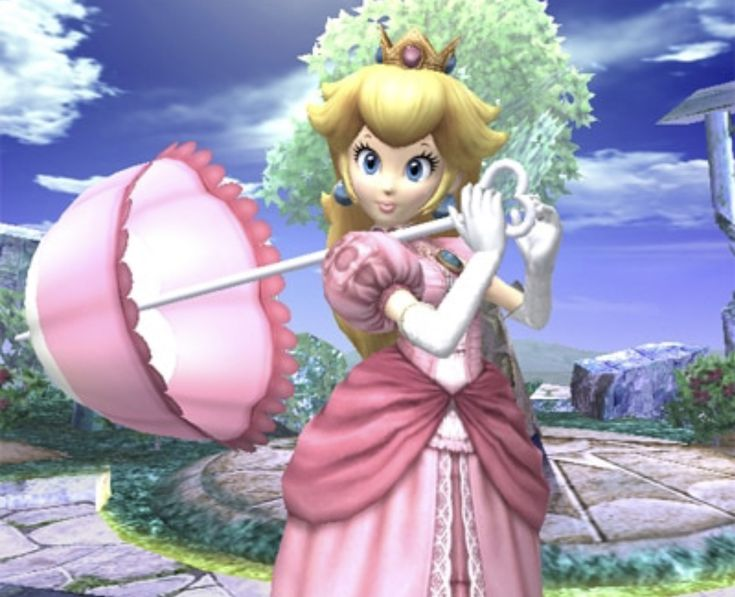

HW 1 - Kaylee Beck
Hi, my name is Kaylee Beck! I've taken your creative coding class and web design class but its I didn't take
a coding class last semester so I am feeling very rusty. Coding has never been my strong suit so so apologized for
how this website might turn out! I will try my best to keep up in this class!
This is my last semester and I'm a media art major. I do graphic design and love it so much! I'm a huge nerd and
love being creative with deisgn and art. I'm not a huge gamer cause I never grew up learning how to use a controller
outside the nintendo wii console. I usally just watch gameplay on YouTube instead of playing myself.
Recently I have been trying to learn and started playing Red Dead Redemption 2!
My favorite video game memory has always been me playing super smash bros as the character peach! I wasn't very good
when I was small but as I got older many people found me winner as that character annoying since her actions follow
a repetitive mantra!
